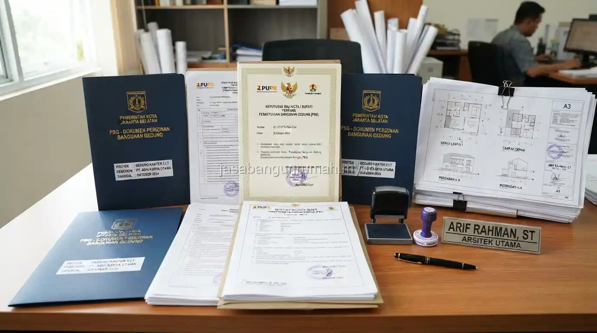

Daftar Isi
Kontraktor bangun rumah Bandung menangani pembangunan rumah custom dari tahap desain hingga struktur selesai, termasuk pendampingan legalitas PBG sehingga pemilik rumah tidak perlu mengurus dokumen perizinan secara terpisah.
Apa Saja Layanan yang Tercakup dalam Jasa Kontraktor Bangun Rumah Bandung?
Layanan mencakup perancangan desain rumah custom sesuai kebutuhan klien, pembangunan struktur dari pondasi hingga finishing, serta pendampingan pengurusan dokumen legalitas seperti Persetujuan Bangunan Gedung yang menggantikan IMB.
Dengan menggabungkan layanan desain, konstruksi, dan legalitas dalam satu paket, pemilik rumah tidak perlu berkoordinasi dengan banyak pihak berbeda untuk setiap tahapan, sehingga proses pembangunan dapat berjalan lebih terkoordinasi dari awal hingga akhir.
Cakupan layanan yang tersedia meliputi:
- Konsultasi kebutuhan ruang dan gaya desain rumah
- Perancangan gambar kerja arsitektur dan struktur
- Penyusunan Rencana Anggaran Biaya (RAB) yang transparan
- Pembangunan struktur dari pondasi, dinding, hingga atap
- Pekerjaan finishing interior dan eksterior
- Pendampingan pengurusan legalitas PBG
Layanan ini cocok bagi warga Bandung yang menginginkan proses lebih praktis tanpa harus mengurus desain, konstruksi, dan perizinan secara terpisah.
Apakah Legalitas PBG Termasuk dalam Paket Layanan Kontraktor Ini?
Pendampingan legalitas PBG termasuk dalam cakupan layanan, mulai dari penyusunan gambar teknis yang dibutuhkan untuk pengajuan hingga pemantauan proses pengajuan ke instansi terkait di wilayah Bandung.

Pendampingan ini bertujuan memastikan dokumen bangunan sesuai dengan gambar kerja yang akan dilaksanakan di lapangan, sehingga proses pembangunan dan legalitas berjalan selaras tanpa perlu revisi besar di kemudian hari.
Meski demikian, kepastian waktu penerbitan dokumen tetap bergantung pada kebijakan dan proses verifikasi dari instansi terkait yang berwenang di wilayah tersebut. Beberapa dokumen yang biasanya dibantu dalam proses pendampingan ini antara lain:
- Gambar teknis arsitektur dan struktur untuk pengajuan PBG
- Dokumen persyaratan administrasi pengajuan perizinan
- Koordinasi dengan instansi terkait selama proses verifikasi
- Pemantauan status pengajuan hingga dokumen diterbitkan
Bagaimana Proses Awal untuk Memulai Pembangunan Rumah Custom?
Proses awal dimulai dari sesi konsultasi kebutuhan ruang dan gaya desain yang diinginkan, dilanjutkan dengan survey lokasi untuk menilai kondisi lahan, kemudian penyusunan gambar kerja dan Rencana Anggaran Biaya sebelum kontrak kerja disepakati.
Setelah kontrak disepakati, proses dilanjutkan dengan pengurusan dokumen legalitas secara paralel dengan persiapan material dan penjadwalan tim konstruksi, sehingga begitu dokumen selesai, pembangunan fisik dapat segera dimulai tanpa banyak jeda waktu.
Wilayah layanan kontraktor ini mencakup Kota Bandung, Kabupaten Bandung, dan sebagian kawasan Bandung Raya, dengan tim yang dapat dijadwalkan untuk survey lokasi setelah permintaan awal diajukan.
Bagi warga Bandung yang ingin mewujudkan hunian impian dengan desain custom dan proses legalitas yang terurus, dapat langsung menghubungi jasa kontraktor bangun rumah kami untuk menjadwalkan konsultasi awal dan survey lokasi secara gratis.